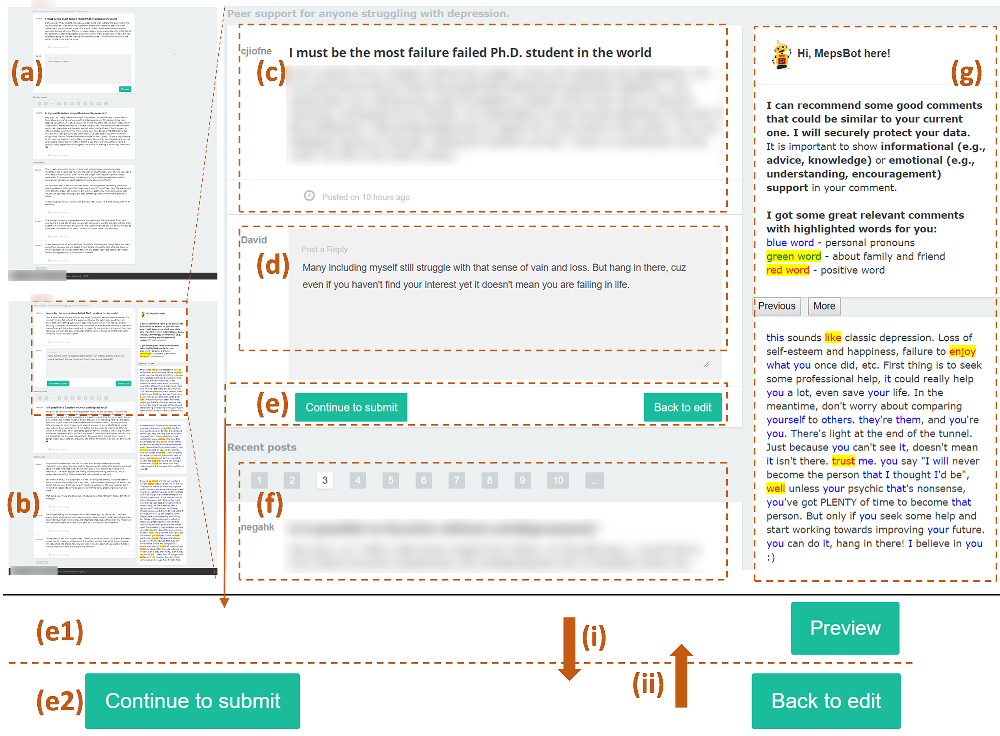

Textual comments from peers with informational support (IS) and emotional support (ES) are beneficial to members of online mental health communities (OMHCs). However, many comments are not of high quality in reality. To relieve this issue, a research team led by Dr. Xiaojuan Ma in the HKUST HCI Initiative developed a technological prototype MepsBot which offers peers in-situ writing assistance. For example, in the following similuated community, when a peer drafts a comment to provide social support (either IS or ES) to the poster, he/she can click "Preview" to get feedback from MepsBot. The MepsBot will first analyze the current draft in terms of the level of IS and ES. It then suggests a point to improve or recommend similar high-quality comments for reference. The peer can choose "Back to edit" to adjust their comments or "Continue to submit" to formally publish the content whenever they want. Watch a demo of MepsBot.
In particular, we designed two types of MepsBot assisting mechanisms based on existing writing assistants practices. MepsBot in its assessment (AS) mode detects and displays the levels (low, medium or high) of IS and ES of an input draft, and it suggests ways to improve (e.g., "More positive words can be used in the comment, like: exciting, brave, ...). MepsBot in its recommendation (RE) mode suggests highquality example comments that are semantically similar to the user's current draft from a recommendation pool.
We conducted a user study to evaluate the effects of MepsBot's impact on support providers' experience in the commenting process and the outcome of that process. Participants were asked to write comments with AS-mode or RE-mode MepsBot to support posters who encountered mental issues about research, money, or romantic relationship. Results suggest that both types of MepsBots improve users' confidence in and satisfaction with their comments. The ASmode MepsBot encourages users to refine expressions and is deemed easier to use, while the RE-mode one stimulates more support-related content re-editions. For more information, please refer to the paper: Exploring the Effects of Technological Writing Assistance for Support Providers in Online Mental Health Community.
HCI Initiative is exploring more interesting and practical applications that assist human users, by exploiting rigorous user modeling and advanced natural language processing algorithms. More related works can be found in Dr. Xiaojuan Ma's homepage.